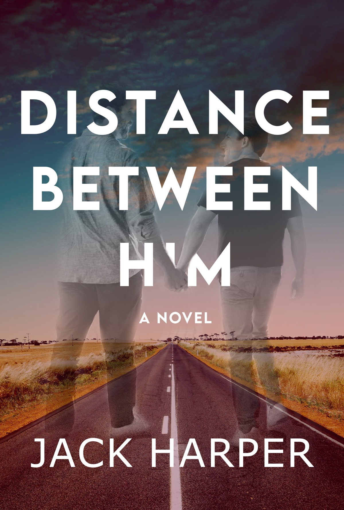

Releases & Bibliography
Standalone MM Romance | Immersive Stories & Time-Bending Connection
Hemingway Falls
Two timelines. One rusted copper mailbox. A connection that defies decades.
Deep within the misty douglas firs outside Seattle, an abandoned lake house holds a secret left behind in a cast-brass mailbox. When neurology intern Brian Bellvue leaves a quiet, sentimental letter in the past, he never expects a response—let alone one from Richard Arthur Dixon, a traveling journalist writing from years in the future. As hand-written letters bridge the gap, Brian scrambles to pioneer a protocol for a rare neurological condition, while Richard holds the ultimate historical truth of Brian's work.

Distance Between Him
Together since eighteen, Grayson and Julian fled rural Louisiana for a lifetime in New York City. Decades later, following Julian’s sudden passing, Grayson must return to his Bible Belt hometown to face both of their families—and his estranged parents' funeral home. Guided by Julian’s newly discovered journals, Grayson confronts past memories, family secrets, and what it truly means to love.
Sands of Time
Together for over thirty years, Miles and Alex face their hardest battle yet when Miles is diagnosed with advanced prostate cancer and forced into early retirement. While NYPD Captain Miles grapples with mortality, Alex uses a rare gift of time travel to escape into their past. But as the rules of his ability become clear, both men must confront the present before time runs out.
Hart's Inferno
Broken by personal tragedy and a failed career, thirty-year-old Orson Hart lands in a psychiatric facility following a suicide attempt. His path to recovery takes an unexpected turn when Dante Delatore—the seasoned fire captain who responded to his 911 call—offers him a safe place to heal. As sparks fly between them, Orson’s past returns to threaten their newfound bond.
...and a Bag of Chips
NYC news cameraman Judah Wilder has always struggled with his body image—until a disastrous gym mishap leaves him convinced he’s the sexiest gay man in the Big Apple. Armed with reckless confidence, Judah lands a high-heat romance with bestselling author Dave Coxwell and hits peak popularity. But when his ego alienates his closest friends, Judah must discover what truly makes him magnetic.